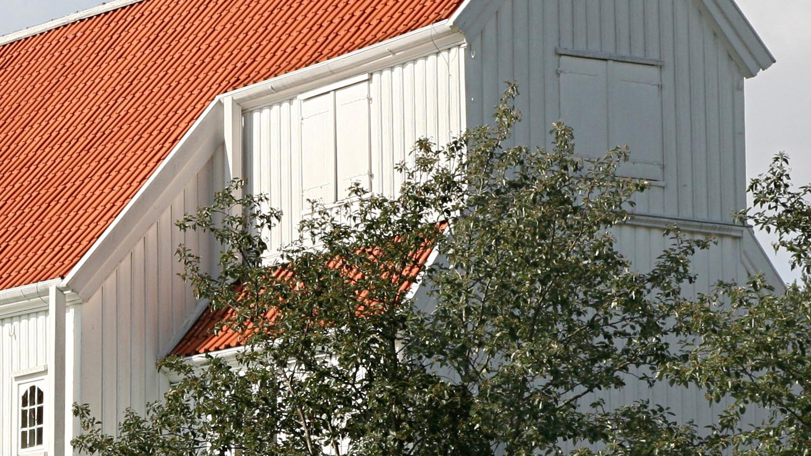
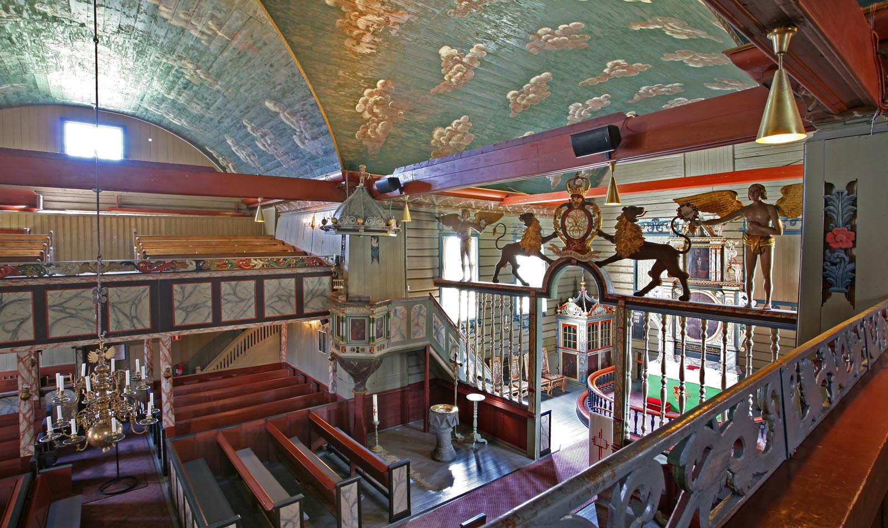
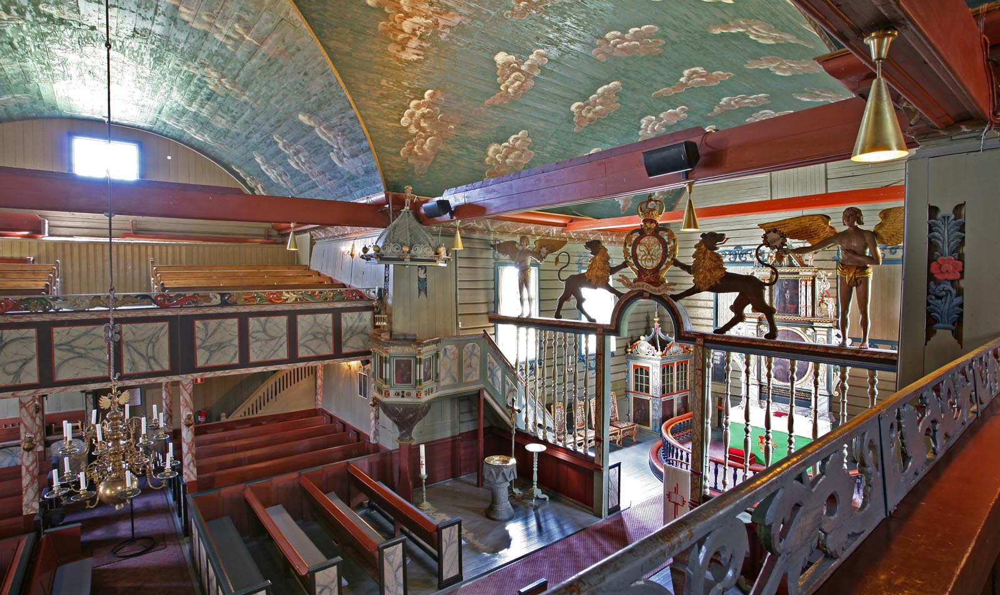
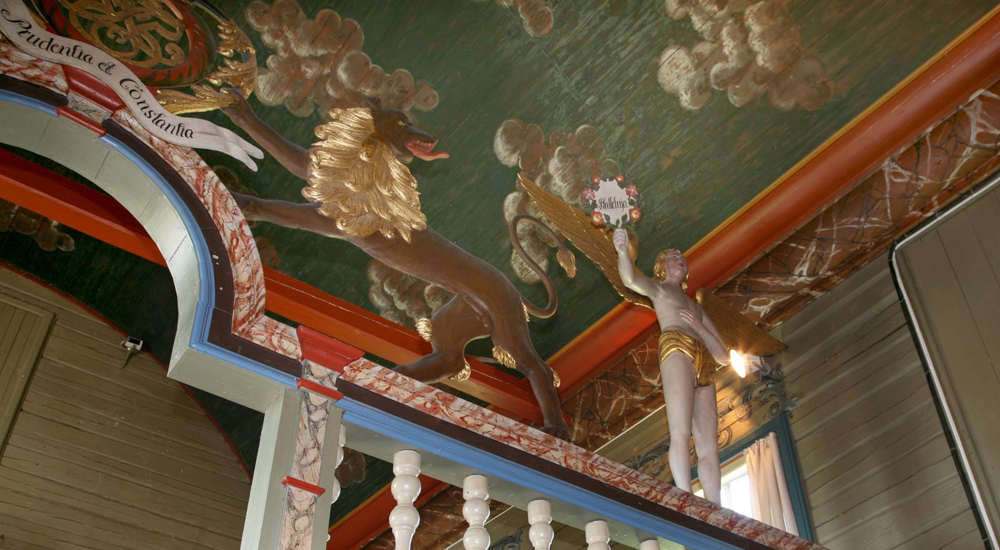
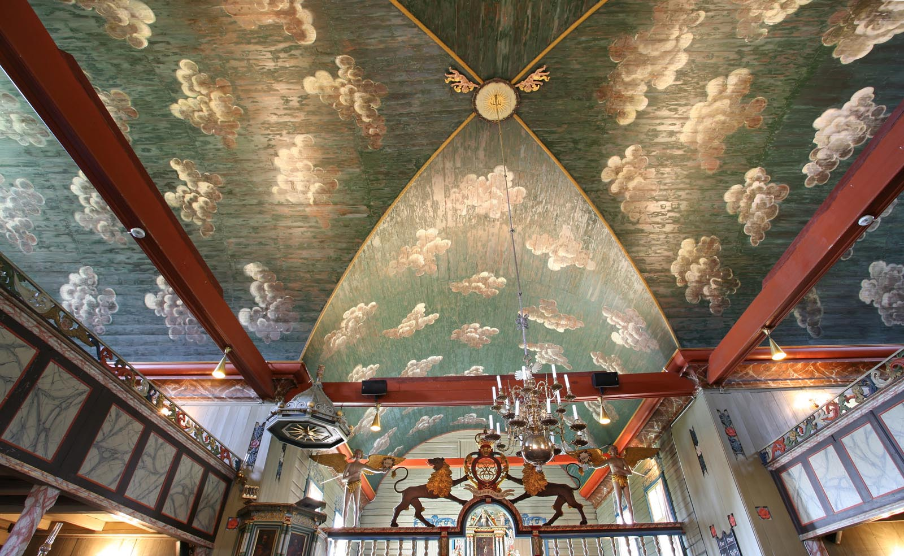
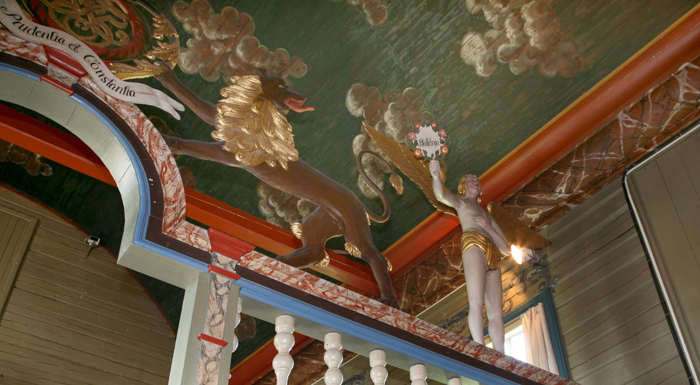
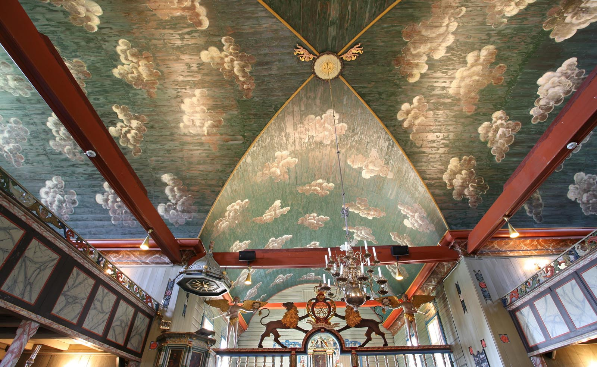

Tromøy kirke
Langkirken i stein ble bygget ca. 1150. Påbygget i 1748 til korskirke, tømret.
Arkitekt 1748 Ole Nielsen Weierholt.
Altertavle: Korsfestelsen og nadverden, av Mogens Chr. Trane 1725.
Samme år laget han prekestolen.
Døpefont i kleberstein, fra 1250.
Korskille: Weierholt, 1750.
Kirkens dekor: Jørgen H. Schultz, 1758.
Skipet ""Dronningen av Danmark" 1751.
Foto: Torvald Slettebø, Universitetet i Agder, Seniorsenteret (2009)
Tekst: Bjarne Karsten Nenseter
Tromøy Kirke - På Kirkevandring i Aust-Agder
Prestegjeld:Tromøy
Prosti: Arendal
Kommune: Arendal
Innviet: Middelalder/1751
Den vakre Tromøy utenfor Arendal har en rik og avvekslende natur, med små skogstrekninger og blomsterprakt, og med lyngkledte heier med utsyn mot himmel og hav. Mellom rullestenene ytterst mot havet, har verneskogen huket seg fast. Gravrøyser og oldtidsfunn viser at Tromøy ble tidlig befolket. Det religiøse sentrum i hedensk tid må - som navnet viser - ha vært Hovet. Det er mulig at hovet ble brukt som kristent gudshus i den første kristne tid. Pave Gregor den store ga i sin tid en forordning om ikke å ødelegge hovene, men rense dem med vievann, fjerne avgudsbilder og så bygge altere.
Tromøy kirke er trolig bygget en gang i tiden mellom 1100 og 1150. Det var en enkel stenkirke uten kor og med en halvrund avslutning mot øst, såkalt apsis. Arkeologen, professor Dietrichson, mener den må være bygget før 1250. Nyere undersøkelser gir grunn til å tro at den som før nevnt, er bygget i begynnelsen av 1100-tallet. Den eldste kirken hører ifølge sakkyndige til «den tidlige romanske stils første og eiendommeligste kirkeanlegg, hvorav bare få er kjent i Norge.» Den eldste prest en kjenner navn på er Sira Ifvar som i 1320 var med å utstede et rettsdokument. Tromøy hørte i flere hundre år til Holt, men i 1747 ble det utskilt sammen med Austre Moland. Fra 1878 har det vært eget prestegjeld.
Den gamle stenkirke har senere - antagelig i gotisk tid ca. 1250-1300 - blitt utvidet og fått rett koravslutning. Stener fra den gamle apsis kan en finne igjen i den nye koravslutning. Nå fikk stenkirken den størrelse som den har fremdeles. Den har en vakker beliggenhet på en morenehøyde ut mot havet. Her har kirken stått - uten tårn og spir - og vært sjømerke i dobbelt forstand. Om Tromøy kirke som sjømerke, pleide en å si:
Når Tromøy kirke står på vannet
så er man tre mil fra landet.
Fyr- og merkevesenet har helt til 1936 vedlikeholdt de av kirkens vegger som vender ut mot havet.
Den gamle kirke ble etter hvert for liten. Folkemengden vokste særlig sterkt i det 18.århundre. Det førte til at kirken ble bygget om fra langkirke til korskirke. Sørlandsrokokkoens mester Ole Nilsen Weierholt har stått for ombyggingen sammen med flere tømmermenn og andre hjelpere. Han har også skåret englene og riksvåpenet over korskranken og Fredrik Vs monogram med innskriften «Prudentia et Constantia». Antagelig har han også skåret ornamentene langs koret. Det vakre malerarbeide er utført av Jørgen Schultz. Hans signatur med årstallet 1758 finner en på orgelgalleriet. De to, Ole Nilsen Weierholt og Jørgen Schultz, arbeidet sammen i Flosta kirke også.
Den vakre altertavlen og prekestolen ble gitt til kirken noen år før ombyggingen. Alterbildet forestiller nederst nattverden og i øverste felt Kristus på korset. Prekestolen har bilder av de fire evangelister og en vakker åttekantet himmel over med en forgylt due. Den praktfulle skriftestol i koret, har bilder av en prest som absolverer en knelende kvinne, og på sidene bilder av den angrende Peter og den forlorne sønns hjemkomst. Av inventar forøvrig må nevnes den vakre gotiske døpefont fra 1300-tallet, et klenodium. Videre dåpsfat i messing og to messinglysestaker fra 1660. Den store ombygging var ferdig i 1751.
I siste halvdel av 1800-tallet kom en forfallstid som også Tromøy kirke fikk merke. Den ble «restaurert» etter tidens smak, i 1880-81. Veggene ble panelt og malt i en trist farve. Taket ble hvitmalt. De gamle kirkestolene ble erstattet med nye benker. Orgelgalleriets utsmykning havnet på Norsk folkemuseum. Heldigvis fikk en det tilbake derfra under siste restaurering.
Menigheten kunne ikke glemme det gamle fargerike interiør. I 1926 ble det nedsatt en komite. Foreninger og private ga midler og herredstyret støttet. Under Riksantikvariatets ledelse ble kirken møysommelig restaurert. Den 20.8.1939 kunne biskop Maroni på ny vigsle det ærverdige gudshus, en stor dag for hele menigheten.
200-års jubileet for den store ombygging, ble feiret med festgudstjeneste ved biskop J. Smemo og prostiets prester. I den anledning kom der ut et vakkert jubileumsskrift ved sokneprest Erling Ruud.
Fra nyere tid kan en nevne at kirken fikk nytt mekanisk orgel i 1965. Tromøy kirke er omgitt av en velstelt kirkegård med minnebauta over falne fra siste krig. Sammen med de øvrige bygninger omkring kirken, har det blitt et harmonisk og meget vakkert kirkeanlegg.
Teksten er hentet fra Bjarne Karsten Nenseters bok ”På Kirkevandring i Aust-Agder”, som han utga i 1993, på grunnlag av sine artikler i Agderposten i 1950-årene, da han var prest i Aust-Agder. Vi gjengir her teksten med tillatelse fra Nenseters arvinger.
 


 


